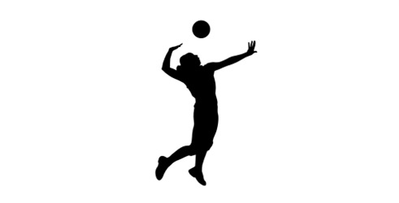

Odbojka je vrsta timskog i olimpijskog sporta gde se lopta udara rukom preko mreže na protivničku stranu. Tim čine šest igrača gde svako ima svoju funkciju.
Tim se sastoji iz:
Tehničar je mozak ekipe i on uvek stoji u blizini mreže. Blokeri takođe stoje kod mreže i njihova uloga je da blokiraju protivnički smeč. Korektor smečira, a primači i libero primaju servis. Moderna odbojka se igra na tri dobijena seta, do 25 poena. Kada i jedna i druga ekipa imaju po dva dobijena seta, igra se peti set, tzv. TAJ-BREJK do 15 poena. U timu je 12 igrača, ali je samo 6 na terenu. Ostali su na klupi i oni prestavljaju zamene.